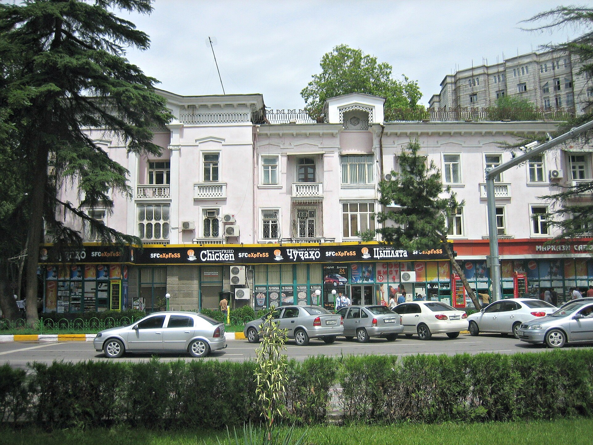

Construction Begins on Central Asia's Tallest Building in Dushanbe: 340 Meters, 77 Floors
Emomali Rahmon laid the foundation stone for the Dushanbe Tower complex on Sept. 3. The project covers 29 hectares and is scheduled for completion in five years.

On Sept. 3, 2026, Tajik President Emomali Rahmon and Dushanbe Mayor Rustam Emomali laid the foundation stone for construction of a large multifunctional architectural complex in the capital's Shohmansur district. The centerpiece of the complex is the Dushanbe Tower, standing 340 meters tall with 77 floors.
If the project is completed, the building will become the tallest structure in Central Asia. The current leader is Abu Dhabi Plaza in Astana, which stands 311 meters tall and has 75 floors.
What the complex includes
According to official figures, the complex will occupy 29 hectares and include 52 structures. Among them are five high-rise towers.
- Hotels and restaurants
- Retail space and offices
- A 1,000-seat concert hall
- A cinema and entertainment center
- Sports facilities
- A park with a lake and landscaped public squares
Construction is planned over five years. According to official estimates, the project is expected to employ more than 2,000 local workers. The architectural design was developed by the international firm RMJM.
The region's high-rise race
High-rise construction has accelerated markedly in Central Asian capitals over the past decade. Large multifunctional complexes have been built or are under construction in Astana, Tashkent and Baku. Such projects typically combine three aims: expanding the office and hotel stock in the city center, creating a visible landmark for foreign investors, and boosting employment in the construction industry.
At the same time, specialists note that the long-term economic effect of such structures depends largely on occupancy rates — that is, on whether there is real demand for the office and retail space.
The context of Tajikistan's economy
Tajikistan is among the Central Asian countries with the lowest gross domestic product, and remittances from abroad play an important role in its economy. The question of funding sources for large construction projects therefore carries particular weight.
The official announcements did not disclose in detail the project's total cost or the structure of its financing — the shares coming from the state budget, private investment or external credit. Until that information is released, it is difficult to assess the project's impact on the budget.
Against the backdrop of education and PISA
In the same week the construction was announced, other international data concerning Tajikistan was released: in the OECD's PISA 2025 study, Tajikistan participated not with a national sample but for the city of Dushanbe, scoring 334 points in science — the lowest result recorded in Central Asia.
The two reports are not directly related, but together they became part of a discussion about the imbalance between capital investment and human capital in the region.
Next stages
The region's tallest buildings
The history of high-rise construction in Central Asia is relatively short. During the Soviet period, almost no residential or office buildings exceeding 100 meters were built in the region's cities; the main vertical landmarks were television towers and industrial structures.
The situation changed after independence. The Bayterek monument was built in Astana, followed later by the Abu Dhabi Plaza complex — the latter, at 311 meters and 75 floors, remains the tallest building in the region. Several high-rises have been erected in Tashkent as part of the Tashkent City business center.
If Dushanbe Tower is completed, the lead in height will pass to the Tajik capital.
The Shohmansur district
The Shohmansur district, where the complex is being built, is located in central Dushanbe. Large-scale redevelopment has been under way in the capital in recent years: multistory complexes are being erected in place of old low-rise neighborhoods.
Such processes raise the same questions in many cities: the terms for relocating existing residents, the fate of historic buildings, and the readiness of urban infrastructure — water, sewerage, transport — for the new load.
The construction industry and employment
Official information indicates the project will employ more than 2,000 local workers. Employment is a matter of particular importance for Tajikistan: a significant share of the country's population works abroad, mainly in Russia.
Against the backdrop of tightening migration rules in Russia, the question of domestic sources of employment remains pressing for every country in the region. In the first half of 2026, entries into Russia for work purposes by citizens of Central Asian states fell 15 percent.
The architectural design
The complex's architectural design was developed by the international firm RMJM. The firm has carried out a number of high-rise projects in the Middle East and Asia.
According to the published description, the complex consists of more than the tower alone: 52 structures are planned across the 29-hectare site, including five tall towers, a concert hall, a cinema, sports facilities and a park with a lake.
International experience with similar projects
In large multifunctional complexes, construction timelines often run longer than initially announced. This is caused by changing market conditions, shifts in the financing structure and technical complications.
For that reason, interim reports on the project — the completion of foundation work, frame construction and facade stages — give a clearer picture of its actual pace.
Key figures for Tajikistan's economy
Tajikistan has the lowest gross domestic product per capita in Central Asia. Remittances from abroad account for a substantial share of the country's economy, and Tajikistan ranks high in the world by this measure.
The question of funding sources for large construction projects therefore matters: if funds are raised through external credit, this affects the public debt figure; if the investment is private, the project's commercial viability becomes the main criterion.
Rogun and other major projects
Tajikistan's largest infrastructure project is the Rogun hydroelectric plant on the Vakhsh River. It has been under construction for many years and has been the subject of negotiations with international financial institutions.
In 2026, hydropower in the region began to be addressed jointly with neighboring countries: Kyrgyzstan, Kazakhstan and Uzbekistan are working on agreements to co-finance the Kambarata-1 project.
The water and climate backdrop
Tajikistan and Kyrgyzstan generate the bulk of the region's water flow. International reports indicate that the volume of Central Asia's glaciers has shrunk by roughly 30 percent compared with the last century.
Under the allocation agreed for the Amu Darya for the period from October 2025 to October 2026, Tajikistan was allotted 9.8 billion cubic meters, and Turkmenistan and Uzbekistan 22 billion cubic meters each; 4.2 billion cubic meters was designated to sustain the Aral Sea and the Amu Darya delta.
Laying the foundation stone marks the official start of construction, but on projects of this scale the early years typically go to underground work and infrastructure preparation. Final design documents confirming the tower's height and number of floors are expected to be released in stages.